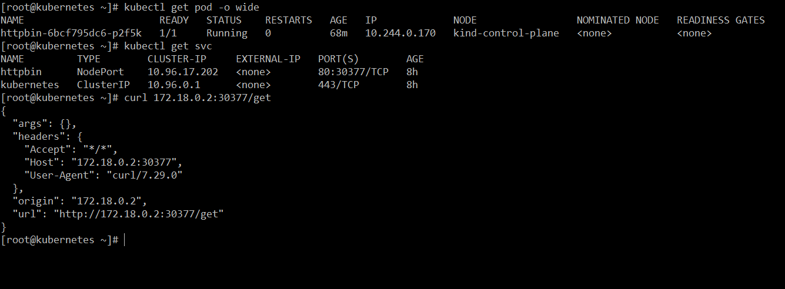
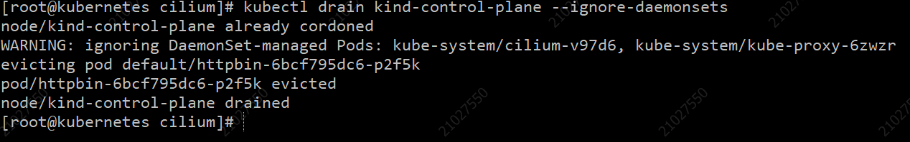
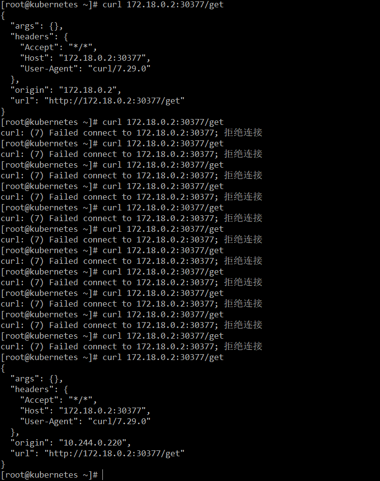
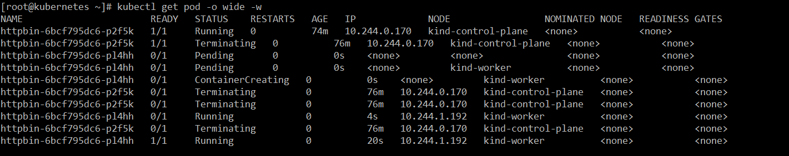
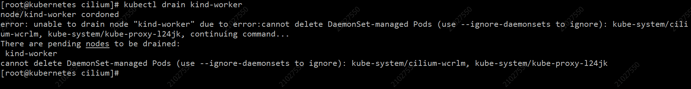

前言
最近在进行K8s运维时，遇到一些问题，特此记录，以备忘。
问题记录
负载均衡选择
我们在原生集群中，集成了Nginx Ingress Controller，并使用了公有云上的CLB进行转发。从CLB到K8s集群中的Nginx Controller实例，目前主流上如下三种连接方式：
HostNetwork
让Nginx Controller直接使用节点的网络。
这种方式的好处是效率高，CLB直接转发给节点，进协议栈，然后交给Nginx实例。
缺点是需要固定集群中的一些节点最为CLB的后端，一旦需要扩缩容，则需要手动维护CLB的后端服务器列表。而且如果无法在单个节点上部署多套Nginx Controller，会有端口冲突的问题（不建议在命令行修改Nginx Controller默认的端口号，不利于维护）。
NodePort
主流厂商的LoadBalancer Service都是通过NodePort的方式实现的。优点是厂商一般都提供了LoadBalancer Service自动创建（绑定已创建）CLB的方式，CLB的后端无需手工维护，可以自动配置。
缺点是，首先通过NodePort这种方式会导致网络通信链路变长，CLB转发给NodePort后需要在协议栈中再次进行转发，或是转发给同节点的Pod网络命名空间，或是跨节点转发给Nginx Controller实例。如果需要保留客户端IP需要设置externalTrafficPolicy=local，这样虽然保留住了客户端IP。但是如果在没有Nginx Controller的节点上访问CLB，会访问不通。究其原因，是因为LoadBalancer Service的ExternalName会写上CLB的IP，然后IPVS会在本机设置到CLB这个IP的转发地址，而Service的externalTrafficPolicy=local允许转发给本机的Nginx Controller。这些问题导致该方案无法使用。
ENI
这种方式对Pod的网络模型有要求，Pod的CIDR必须使用VPC中的子网。节点上会为Pod单独绑定弹性网卡，设置IP。
Pod相当于与集群中的节点是对等的关系，在一个扁平网络里。这种方式SLB可以想转发给VPC中节点一样，直接将数据转发给Pod。
这种方式Pod的IP从VPC的子网中直接分配，可能会有IP不足的问题。不同公有云厂商也有一些其他限制（例如必须使用公有云提供的操作系统内核）。具体情况需要参照公有云厂商的文档，这里不再详述。
Prometheus
最近搭建了一个海外的K8s集群，集群中部署了Prometheus，公司内网这边需要读取集群中的监控数据，海外集群和公司内网目前通过IPSec进行连接，延迟大约在200+ms。我们的proxy prometheus连接了许多prometheus，应用查询时需要遍历所有的prometheus，因此不能将高延迟的promethues放到proxy上，否则会拖慢所有相关查询的速度。
Remote Storage
为了解决Prometheus历史数据持久化的问题，Prometheus定义了两个标准的接口remote write/remote read，用户可以基于这两个接口将数据保存到任意第三方的存储服务中，这种方式被称为Remote Storage。
Remote Write
Prometheus内置了Remote Write的实现，只要在服务端的Prometheus启动命令行加入如下参数，即可开启。
1 | --web.enable-remote-write-receiver # 默认的写入端点是：/api/v1/write |
然后在客户端的Prometheus的配置文件中，加入写入的端点：
1 | remote_write: |
客户端的Prometheus会启动一个队列，从wal中读取样本数据，然后写入内存中分片所属的队列，然后请求远程写入端点，发送数据。
不影响客户端Prometheus本地数据的保存，会在远程端点额外保存一份。
Remote Read
支持从第三方存储中读取Promethues数据（通过一个adapter服务将第三方存储的数据协议转换为Prometheus的标准数据协议，可自定义），当然也可以从另一个Prometheus中读取数据。
1 | remote_read: |
远程读取会从远端服务中获取原始样本数据，然后在本地进行计算。
Node Maintain
最近接到需求，需要对生产集群部分节点进行下线处理，首先根据资源的情况，确定的部分节点，接下来要对节点上的业务负载进行处理，并退订该部分节点。
Cordon
对节点执行：
1 | kubectl cordon kind-worker # 使用kubectl uncordon kind-worker解除 |
查看Node，发现在taints中增加了一行，标明不再接受新调度的Pod。
1 | Taints: node.kubernetes.io/unschedulable:NoSchedule |
Drain
使用drain命令，会对当前节点上的Pod进行Evicted。无法驱逐使用了local-path的Pod和Daemonset（可使用–ignore-daemonsets忽略）。
drain并不能保证应用的可用性，如果需要保证服务不中断，服务质量不受影响，需要结合PodDisruptionBudget。
PodDisruptionBudget
PDB可以设置最大不可用副本数和最小可用副本数，一旦drain操作进行时，被驱逐的工作负载的副本，违反PDB中设置的规则，drain将会报错，无法进行下去，直到满足PDB。
实践验证
受限于电脑资源，使用kind创建了一个两个节点的K8s集群，并去除调了Master节点不能调度Pod的taints。
部署一个httpbin的deployment，设置副本数为1。
1 | apiVersion: apps/v1 |
查看集群Pod的状态，并通过curl验证Pod访问正常。

执行kubectl drain kind-control-pane：

在drain执行的过程中，curl httpbin服务。发现中间出现了服务中断：

watch Pod的日志，发现新创建的Pod尚未Ready，就已经被停止。

这与我们的要求相违背，加上PDB再次进行实验：
1 | apiVersion: policy/v1 |
发现PDB阻止了drain对Pod进行Evicted。也就是说PDB可以防止drain进行误操作，破坏业务为应用副本制定的规则，从而保障了节点维护时，不会影响服务质量，发生服务中断这样的生产问题。

因此，为了能Evicted要维护节点上的Pod，可以修改Deployment的副本数，扩大到2，让其他节点上有httpbin的Ready实例，drain就能顺利执行。
Zookeeper启动异常
K8s集群Pod间网络不通，strimzi-kafka-operator启动zookeeper时，日志报NullPointerExecption。从日志上一点也看不出来是网路不通的原因。
Iptables
部署Drone的plugins/docker时，在镜像中通过如下命令连接宿主机sock时，会报Iptables命令无法设置，或者是不存在iptables，提示通过insmod安装。
1 | dockerd --data-root /var/lib/docker --host=unix:///var/run/docker.sock |
后经多番尝试可通过添加–iptables=false测试启动成功。查看宿主机和镜像中的iptables版本iptables v1.8.4 (nf_tables)和iptables v1.8.3 (legacy)。
目前Linux的iptables有了nf-tables这种全新的实现，改进了原来的内核api，无法与原先的版本兼容。后通过在主机中加载ip_tables模块得以解决。目前宿主机中同时存在nf_tables和legacy的iptables，目前尚未发现问题。
1 | modprobe ip_tables |
负载均衡内网回环
使用公有云CLB+集群Nginx Ingress进行负载均衡时，会遇到内网负载均衡网络回环的问题，分一下几种情况：
（1）公网CLB，CLB指向的后端服务节点以及其上面的Pod访问公网负载均衡地址，不会出现回环问题，因为从服务节点出去的流量会nat成公网的地址，再转发给CLB时，CLB转发给后端服务节点，后端服务节点无法识别到自己的公网地址，所以通信正常。
（2）内网CLB，CLB指向的后端服务节点以及器上面的Pod访问内网负载均衡地址，源IP为该服务器的地址，如果CLB只有这一个后端，转发给服务节点后，服务节点会发现源IP和目的IP是一样的，因此会在服务器内部回环。如果存在多个后端，那么如果转发给其他服务节点，通信正常，如果转发给这个服务节点，会失败，七层CLB会重试，就会出现延迟比较高的情况。